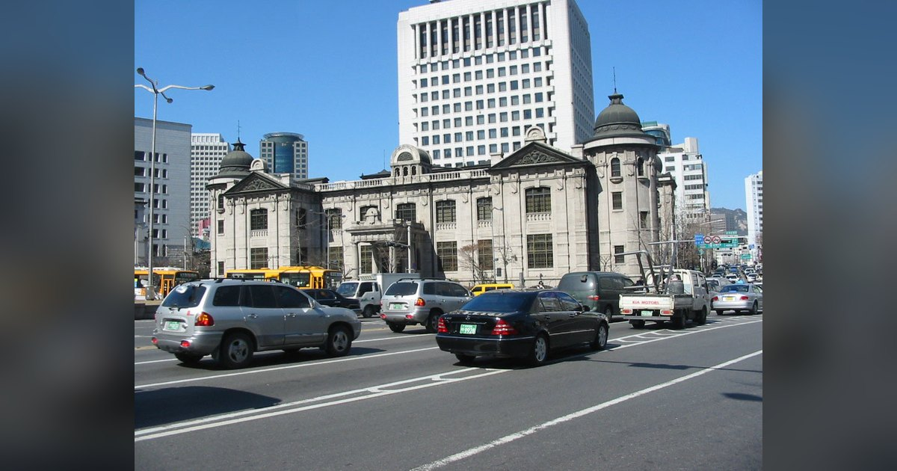

정기예금 금리 연 4% 이상 비중 10.6%, 2년 9개월 만의 최고…같은 달 대출 31.6%는 5% 넘어
1년 전 9월, 은행이 새로 받은 정기예금 돈의 99.0%는 연 3%가 안 되는 금리를 받았습니다. 올해 9월에는 81.4%가 연 3% 이상이고, 10.6%는 연 4%를 넘었습니다.

1년 전 9월, 은행이 새로 받은 정기예금 돈의 99.0%는 연 3%가 안 되는 금리를 받았습니다. 올해 9월에는 81.4%가 연 3% 이상이고, 10.6%는 연 4%를 넘었습니다.